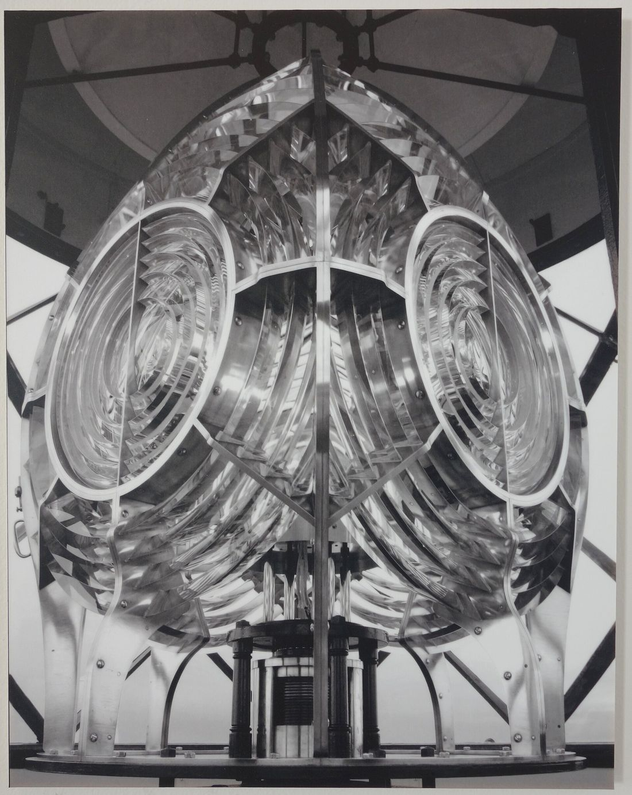

Guiding ships since 1852

It started with a wreck
In 1842 the mail ship R.M.S. Medina was wrecked here, the first British Royal Mail ship lost at sea. Ten years later Grand Turk had its lighthouse, still the only one in the country.
Shipped from England in pieces
Alexander Gordon designed a cast-iron tower that was made in England and bolted together on the island, one of the first of its kind. Chance Brothers fitted Fresnel lenses in 1943, and the light went electric in 1971.
The lens in the picture is a Chance Brothers Fresnel lens of the kind fitted here in 1943. This one stands at Point Cabrillo, California.
Plan your stop